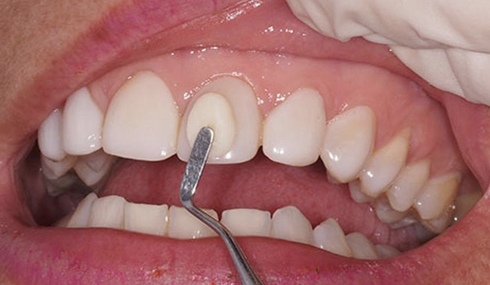
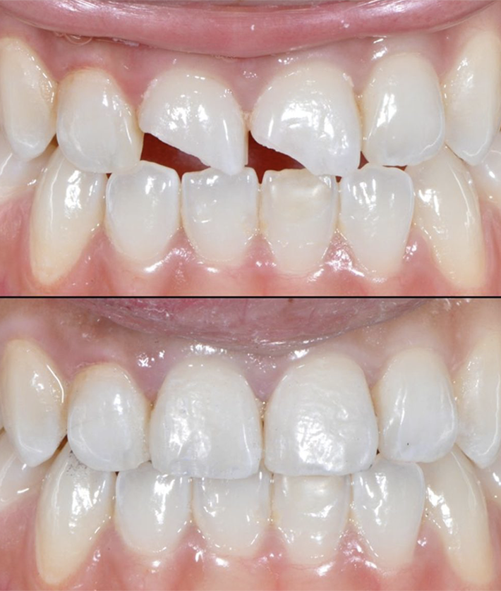

Resinas
Resinas|  Imagen representativa sacada de Clinica Dental Huaraz |
||
Restauramos estéticamente tus dientes, trabajando el color adecuado para que la restairación sea estéticamente agradable a vista del paciente y su entorno. |
||
| Imagen representativa sacada de DTDental | Con ello también se corrigen fisuras y grietas.
Mejoran la integridad estructural de los dientes, salud en tejidos para mantener y proteger los dientes naturales y por lo tanto aumenta la salud bucal del paciente. |
|